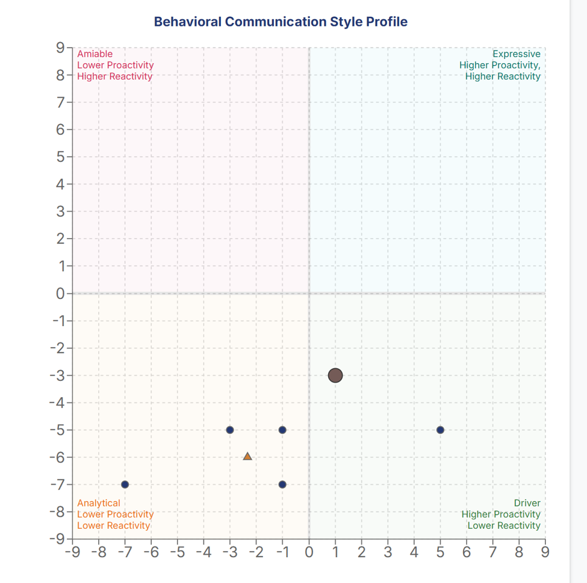
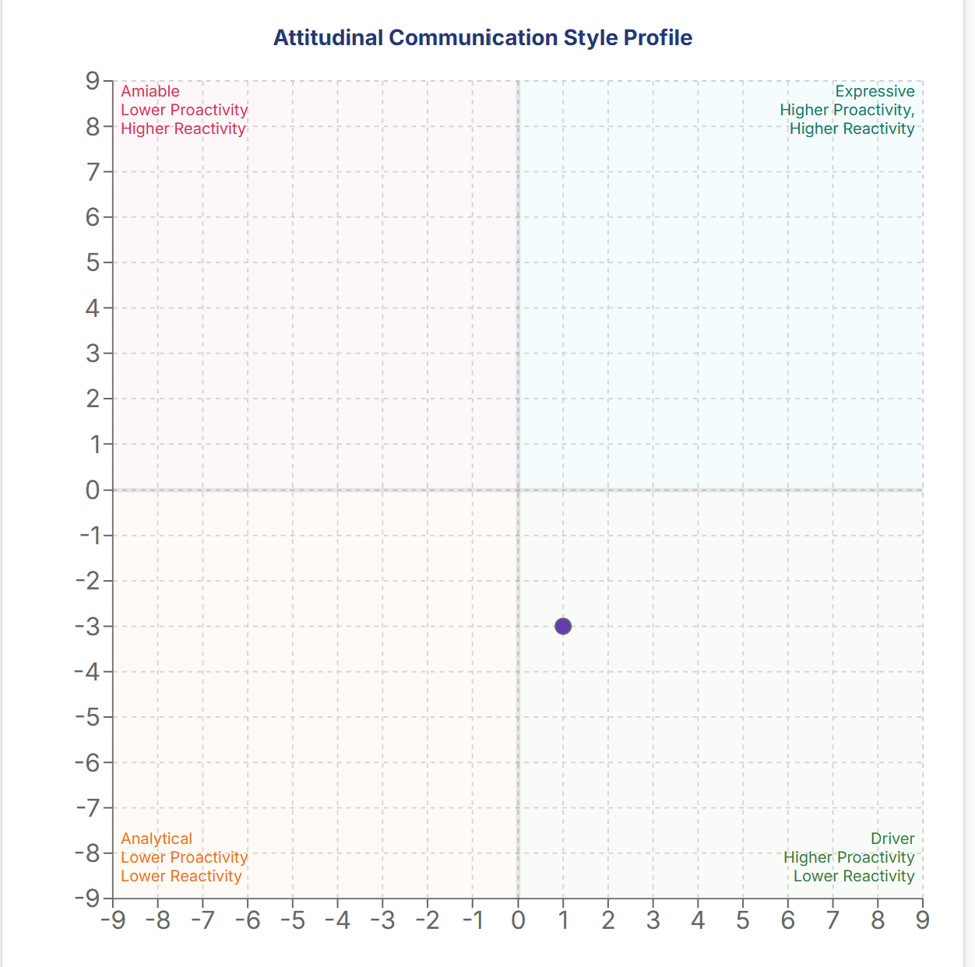
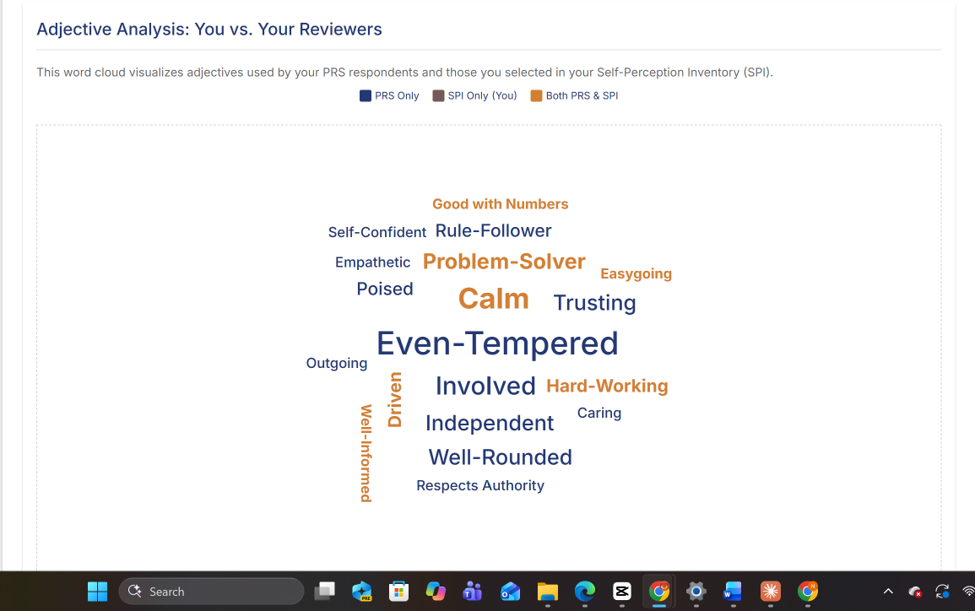

Analysis
Professional persona evolution
For a financial planner, trust is the product. Clients hand over their money and their life plans. My reputation has to make that decision easy.
How to read this page
Each section below follows the same six steps: Claim, Meaning, Evidence, Reputation Data, Analysis and Strategy. In the Analysis step I compare three things.
- Identity is how I see myself.
- Reputation is how others see me.
- Ideal reputation is how I want a client to see me.
My evidence comes from four sources.
- The Self-Perception Inventory (SPI) records how I describe myself.
- The PRS is a survey in which five people who know me rated my communication style and chose adjectives to describe me. I call them the PRS respondents.
- A 360 review collects feedback from the people around you. My Team 360 comes from my teammates.
- Teammate and instructor feedback is written comments about my work.
PeopleStyle is the model behind my communication charts. It places a person on two scales that run from -9 to +9. Proactivity is how assertively someone starts conversations and pushes ideas. Reactivity is how readily someone responds to others. The scales combine into four styles: Driver, Expressive, Amiable and Analytical.
Communication style
Claim
I see myself as a reserved Driver.
Meaning
A Driver is higher in proactivity and lower in reactivity. An Analytical is lower on both scales. My self-perception sits at about +1 on proactivity and -3 on reactivity. That puts me in the Driver quadrant, but only one point from the line that separates Driver from Analytical.
Reputation data
- Me (self-perception, behavioral and attitudinal)
- One PRS respondent
- Average of respondents in my survey report
| Source | Proactivity | Reactivity | Style |
|---|---|---|---|
| Me, behavioral | +1 | −3 | Driver |
| Me, attitudinal | +1 | −3 | Driver |
| Respondent 1 | −7 | −7 | Analytical |
| Respondent 2 | −3 | −5 | Analytical |
| Respondent 3 | −1 | −5 | Analytical |
| Respondent 4 | −1 | −7 | Analytical |
| Respondent 5 | +5 | −5 | Driver |
| Average in my survey report | about −2.3 | about −6 | Analytical |
- Four of five respondents placed me in Analytical.
- All five placed me lower in responsiveness than I placed myself.
- The respondents' average is in the Analytical quadrant.
See the original survey charts


Analysis
A reserved Driver, one point from the Analytical line.
An Analytical: quieter, more measured and more guarded than I think I come across.
Analytical rigor, with more visible assertiveness and warmth in client-facing moments.
Strength for planning
An Analytical style fits careful, numbers-first work where clients need precision.
Risk for planning
Clients need to feel heard and need to hear me. If people already read me as quieter than I intend, a client may read me as distant.
Counterpoint
One teammate said I do “incredibly well on presentations.” When the setting is structured, I show up. The gap is in informal and unstructured moments.
Strategy
I will keep the analytical rigor and raise my visible assertiveness and warmth. I will speak within the first ten minutes of every team meeting. I will also lead at least one client-style presentation or mock client meeting before May 2027. The full plan is in the conclusion.
Core values
Claim
My core values are trust, loyalty and integrity.
Meaning
Trust
My brothers trust me with their money and expect it to be used the right way. I keep everything above board and as transparent as possible.
Loyalty
I put the organization and its members ahead of my own interest. A fiduciary is someone legally bound to put another person's interest ahead of their own. An advisor at a registered investment advisor (RIA) firm owes clients a fiduciary duty of loyalty, which means the client's interest comes first. My loyalty to the chapter is the same instinct at a smaller scale.
Integrity
Treasurer work is mostly unseen, so I have to do the right thing when no one is looking.
Evidence
Trust
When I ran for treasurer, I told the chapter, “Nothing I say matters if you can’t trust me.”
Loyalty
Most of my treasurer work happens behind the scenes. I do it because I took an oath to the organization and the people in it.
Integrity
I decline dues incentives and financial opportunities I technically qualify for. If I benefited from incentives I designed, it could call the integrity of my office into question.
Reputation data
Adjectives both the PRS respondents and I chose
- Good with Numbers
- Problem-Solver
- Calm
- Easygoing
- Hard-Working
- Driven
- Well-Informed
Adjectives only the PRS respondents chose
- Even-Tempered (most frequent)
- Self-Confident
- Rule-Follower
- Respects Authority
- Empathetic
- Caring
- Poised
- Trusting
- Outgoing
- Involved
- Independent
- Well-Rounded
Team 360 descriptors
- Strong work ethic
- High quality work
- Respected
- Engaged

Analysis
Trust, loyalty and integrity.
Calm, rule-follower, respects authority and hard-working. Reviewers describe how I behave.
Reviewers name what I stand for as well as how I behave.
- Every adjective I chose was confirmed by others. My self-image is accurate on competence and temperament.
- None of my core values appear by name. Reviewers describe how I behave, not what I stand for. My behavior supports integrity, but my values are not yet visible to my network.
- Even-Tempered was the most frequent PRS adjective. Calm under pressure is a planning asset. Clients panic in downturns, and an advisor who stays steady keeps them from costly mistakes.
Strategy
I will make my values explicit, not just implied, through how I talk about my work. I will name trust, loyalty and integrity directly in interviews, coffee chats and my LinkedIn summary.
Other insight: I’m quieter than I realized
Claim
I am quieter than I realized.
Meaning
I always knew I was on the quieter side. I did not know how many people noticed. People see me as smart but wish I spoke up more.
Evidence
This semester I made a deliberate effort to talk more in meetings and informal settings. My goal was a more visible presence.
Reputation data
- Four of the five PRS respondents rated my proactivity lower than my own score of +1. One rated it higher.
- Teammate feedback focuses entirely on reliability and quality of work. It includes “you never have to worry about what he is doing” and “you can always count on him.”
Teammate and instructor feedback
“Niko does incredibly well on presentations and works well with the team. He contributes to the success of the team and we don’t have to worry about the quality of his work.”
“He really puts the team together and is always getting his work done on time.”
“You bring good energy to the team through your contribution and are very responsible to make sure you complete your stuff on time.”
“Niko, you always do quality work.”
Analysis
I knew I was on the quieter side.
Smart and dependable, but quiet. People wish I spoke up more.
A dependable executor who is also a voice in the room.
The feedback is valuable. Reliability and quality are what a client needs from a planner. But it describes a dependable executor, not a voice in the room. A client also needs an advisor who explains, asks questions and speaks up when something looks wrong.
Strategy
I will keep building a visible presence. I will speak early in every meeting, practice with a mock client meeting and ask my network again after a year. The steps are in the conclusion.
Conclusion
My competence is visible. My values and my voice are not yet.
My survey results confirm my competence and my temperament. They also show that my values and my voice are not yet visible to the people around me. Closing that gap is my plan.
Strategy and next steps
- Speak within the first ten minutes of every team meeting.
- Lead at least one client-style presentation or mock client meeting before May 2027.
- Name my values directly in interviews, coffee chats and my LinkedIn summary.
- Re-survey my network after one year to measure the gap.
- Secure a financial advising internship.
- Complete CFP education through my minor, graduate in May 2028 and sit for the CFP exam. I do not hold the CFP credential yet.